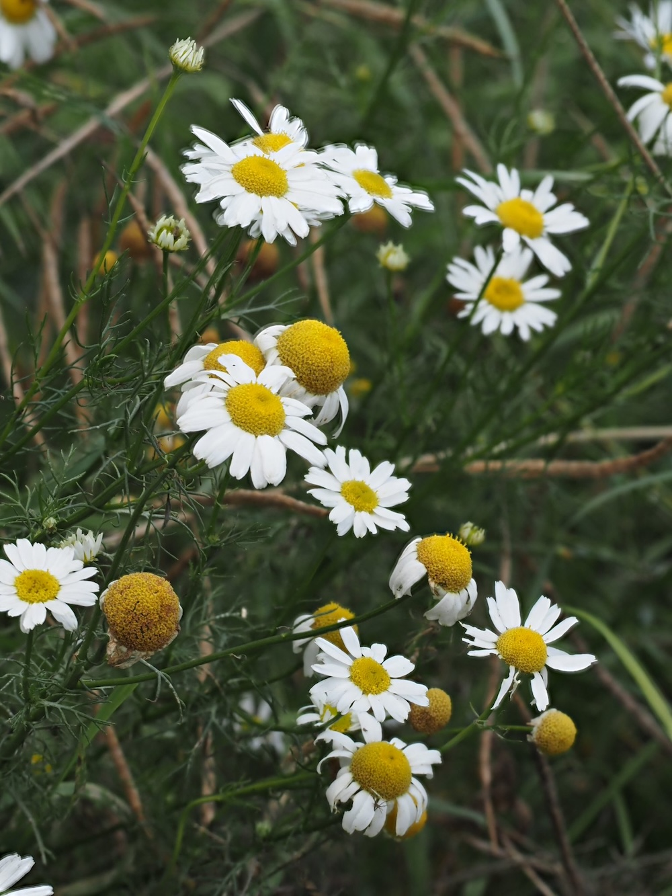

Der Geruchstest
Die Geruchlose Kamille ist optisch fast nicht von der echten Kamille (Matricaria recutita) zu unterscheiden — gleiches Korbblüten-Aussehen, gleiche feinfiedrige Blätter. Der entscheidende Unterschied: Echte Kamille riecht beim Zerreiben unverkennbar nach Kamille (man kennt’s vom Tee). Die Geruchlose riecht nach… gar nichts. Wenn du eine „Kamille“ findest und am Blatt riechst und nichts riechst — dann hast du Tripleurospermum vor dir.
Acker-„Unkraut“ mit gutem Image
Tripleurospermum inodorum ist eines der häufigsten Acker-„Unkräuter“ Mitteleuropas — auf Getreidefeldern, auf Brachflächen, an Wegrändern. Im Gegensatz zu vielen anderen Acker-Begleitern wird sie nicht aktiv bekämpft, weil sie keinen wirtschaftlichen Schaden anrichtet und gleichzeitig wertvolle Insektennahrung liefert.